SIS: Epidemiology system of Susceptible - Infectious
B. Bonté, P. BommelA simple SIS (Susceptible - Infected System) model, which allows the users to compare 3 types of paradigms on the same simple model in epidemiology: continuous differential equations, discrete model and several implementations in an ABM.
Objective
This is the replication of a standard epidemiological model which simulates the spread of an epidemic in a society: healthy people (also called Susceptibles) can become sick (Infected) when they come into contact with other people already carrying the disease. In turn, they contribute to spreading the disease when they meet other people.In this model, the disease is not dangerous. After a while, infected people become susceptible again.
A simulation must therefore monitor the number of infected and healthy people over time.
This model presents two main versions:
Version 1: global level (differential equations)
In the first variation, the "global" version, the individuals are not represented, but only the populations of Susceptibles and Infected :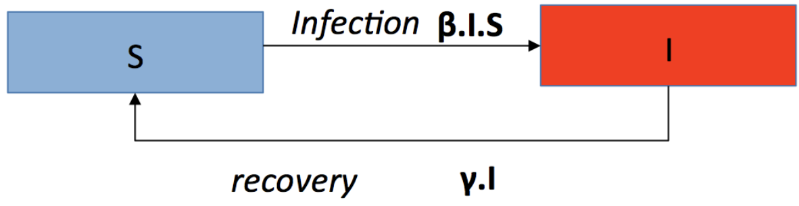
S: number of susceptibles individuals. I: number of infected individuals.
β: Infection rate (0.3). γ: recovery rate (0.1)
This can be translated as a system of 2 differential equations (continuous model):
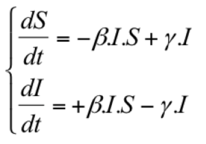
This continuous model can be discretized by transforming dt to deltaT :
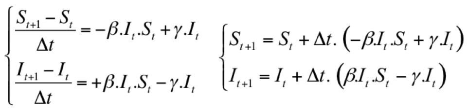
Here is a view of the stock & flow model with Vensim:
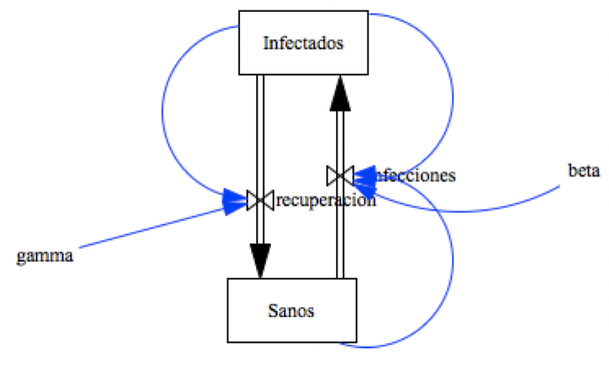
The following picture is a simulation with Vensim from 3 different initial states :
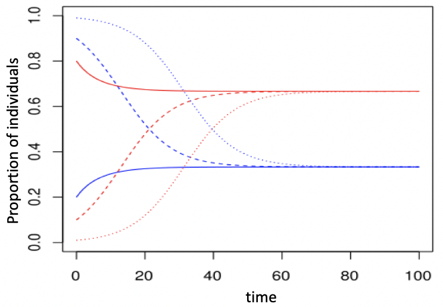
Note that, at equilibrium:
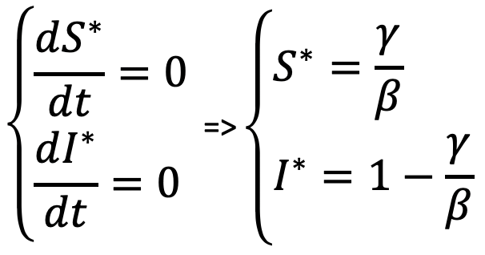 After a while, S and I are stable and there level depends solely on β and γ: S*=1/3 and I*=2/3
Version 2: ABM
The second variation, the "ABM" version explicitly represents the individuals of the system.The previous infectious rate (β = 0,3) is now a probability for each agent to become infected when in contact with another infected agent (30%). The recovery rate must also be adapted at the individual level. For example, it can be transformed in an Infectious Period of 10 days. After this period, the sick agent recovers. In other words, γ (10%, defined at population level) is translated as a recovery period of 10 days, defined at individual level.
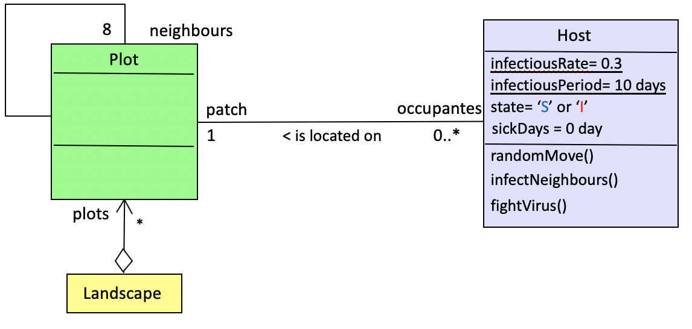
When moving on the landscape, the agents may meet randomly. In order to have a meeting probability equivalents to the one of the global model, the size of the space must be calculated according to the size of the population.
The parameter ß (Infection rate: 0.3) can be expressed as :
ß = -k log(1 - c) , where
* k is the average number of contacts between two individuals per unit of time, and
* is the probability that contact between a susceptible individual and an infectious individual will result in an infection. So c equals infectiousRate (=0.3).
By setting c to 0.3, we calculate k = -ß / log(1 - c) = -0.3 / log (0.7) = -0.3 / (0.7 log) = 1.93671
There are 1.93671 contacts between two individuals per step.
Thus, for a neighborhood of 8 (Moore), 1 agent has a 1/8 chance of going to the cell of a neighboring agent.
If X.Y is the size of the grid, then
popSize = k * X.Y/ 8 <=> X.Y = popSize * 8 /k
In Cormas, this implementation shows the following spatial grid:
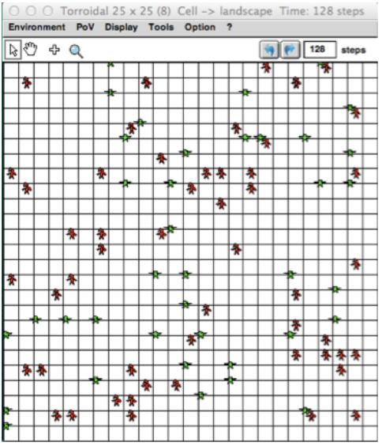
But this transformation from the global model (differential eq.) to the ABM corresponds to one way of doing (the “No Spatial, Infectious Period” scenario). It can be set differently, as presented now:
Implementions and comparison of the following scenarios
By using SIS in Cormas, you can select one among 7 scenarios:
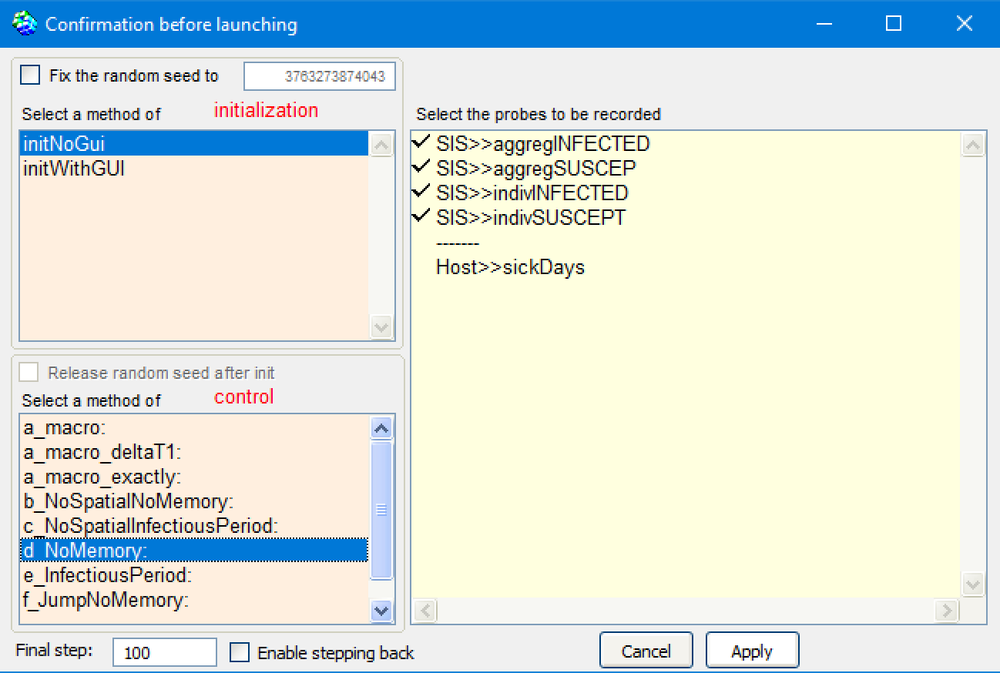For each scenario, the results of the discrete equation model (global model) and the agent model (local model) can be compared (aggregINFECTED vs indivINFECTED).
It is initialized with at least 1000 hosts.
All the parameters are presented in this table:
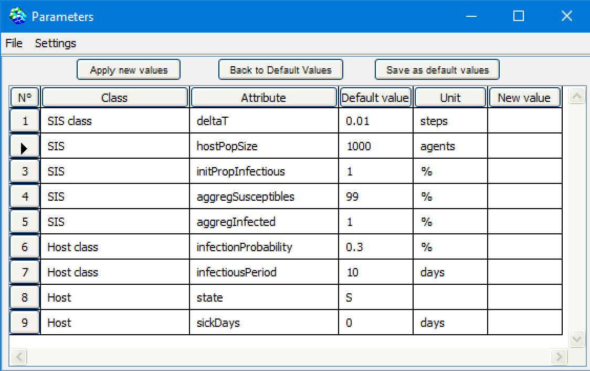
a) macro
Here, the agents do nothing: there state is changed by an outside operator: the result of the global model.In this version (a_macro_deltaT1), the model calculates the number of infected and susceptible agents according to the discrete equation with delta T = 1. It is compared with the discrete global model with deltaT set to 0.01:

Here the curves for both scenario (aggregated and individual) are quite similar, which makes sense. The small difference is due to the resolution time: deltaT = 1 in the case of the ABM and deltaT = 0.01 for the global model.
b) “No Spatial, No Memory”
The agents are not situated. They meet randomly, ie. each infected host can infect one of the agent randomly pick in the population. If this agent is susceptible, he can become infected with a probability (infectionProbability = 0.3).When infected, an agent has a probability of 10% to recover each day..
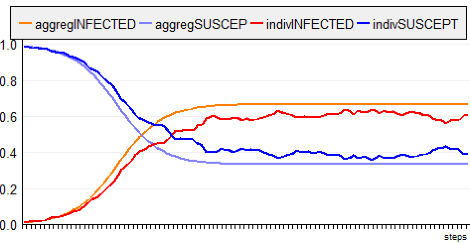
For the ABM, the evolution of the disease is a little slower and the rate of infection stabilizes around 0.6 (instead of 0.666).
c) “No Spatial, Infectious Period”
The agents are not situated. They meet randomly, ie. each infected agent can infect one of the agent of the population.When infected, an agent is infectious during 10 days.
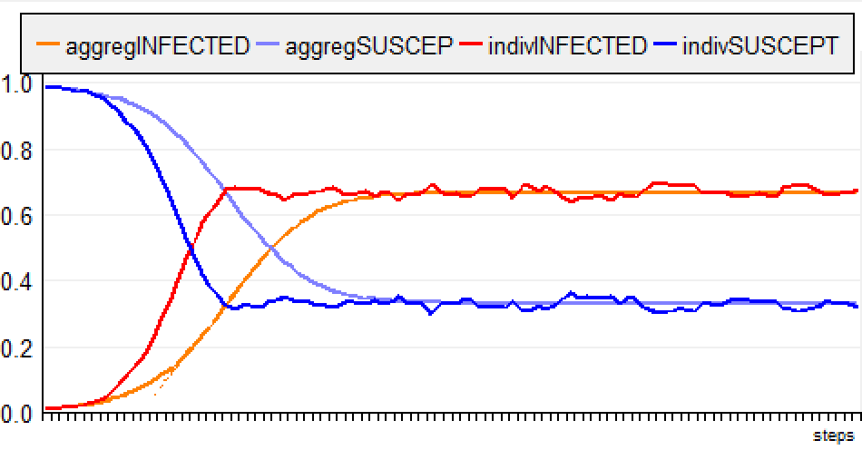
For the ABM, the evolution of the disease is faster but the rate of infection stabilizes around 0.666 (like for the global model).
d) “NoMemory”
The agents are situated on the grid (for 1000 agents, the space dimension is set to 65x64 cells = 4160 cells). They can meet each other when moving randomly.When infected, an agent has a probability of 10% to recover each day.
The step (and the following) is divided in 3 phases:
1) all the agents move,
2) the infected hosts may infect their neighbours (located on the same cell, with infectionProbability),
3) the infected hosts fight the virus (10% probability to recover)
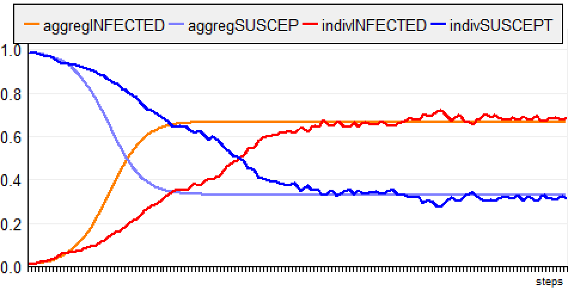
(the simulation is run for 150 steps, in order to verify that the curves are finally aligned with the equilibrium state). For the ABM, the evolution of the disease is a much slower and the rate of infection stabilizes around 0.6 (instead of 0.666).
e) “Infectious Period”
The agents are situated and move randomly. When infected, an agent is infectious during 10 days.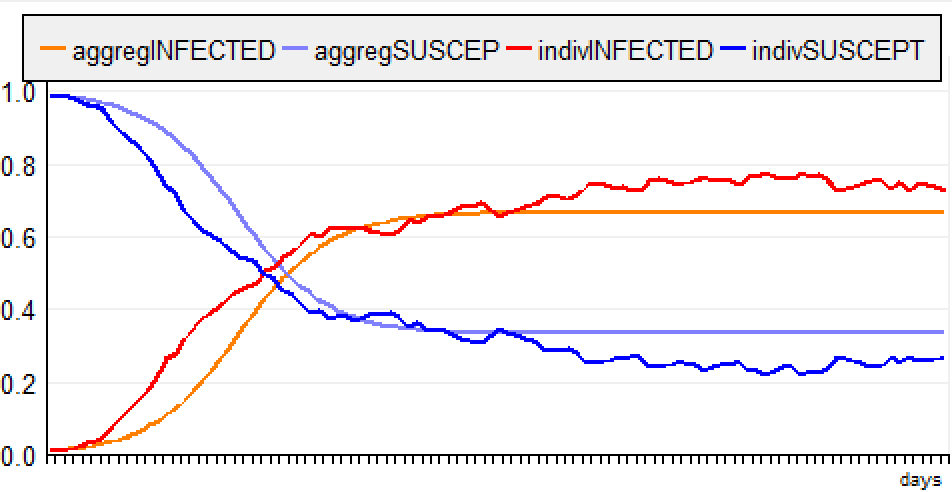
f) “Jump NoMemory”
The agents are situated and jump to a random plot. When infected, an agent has a probability of 10% to recover each day.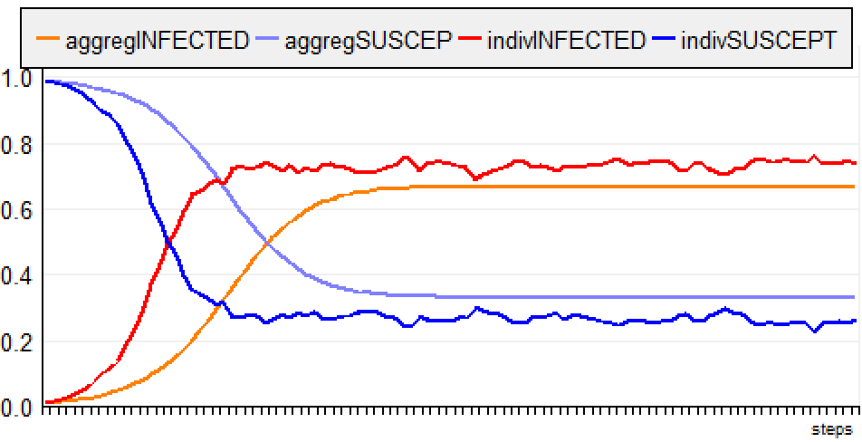
g) “Jump, Infectious Period”
The agents are situated and jump randomly. When infected, an agent is infectious during 10 days.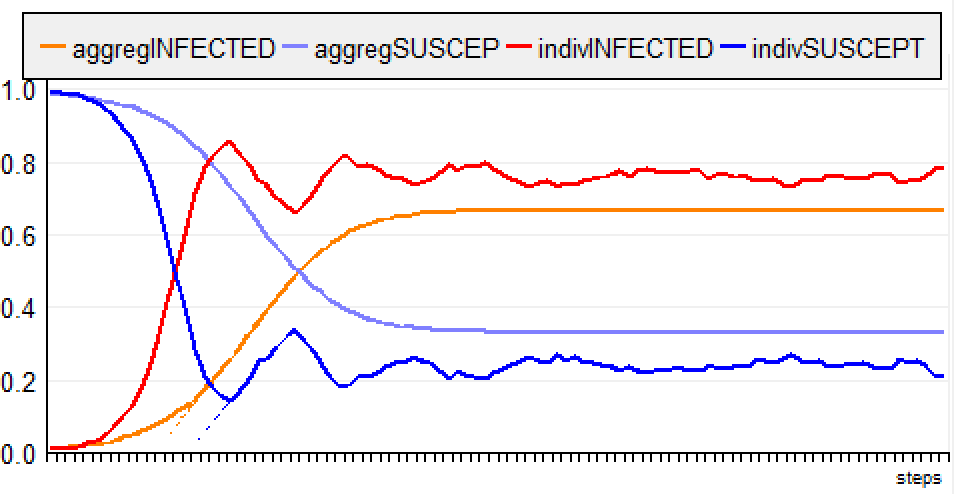
Finally, the following chart enables to compare a similar model designed according to 3 types of paradigms: the continuous differential equation (thick lines), the discrete differential equation (thin lines) and the ABM-e (dotted lines):

Conclusion
Even for a very simple model, there are several ways to formalize it, which often leads to similar but not identical simulations. For the two "global" models (continuous and discrete differential equations), we already notice small differences when delta T = 1 (cf. previous figure).The translation of this model into ABM requires adjustments (to go from global to local) with consequences on the simulation results.
In the context of Covid-19, similar initiatives have been done, with Gama (https://gama-platform.github.io/covid19) and with Netlogo (https://covprehension.org/, in french)
- Download the Cormas model (zipfile, 3Ko). If you have any question about it, contact the authors.